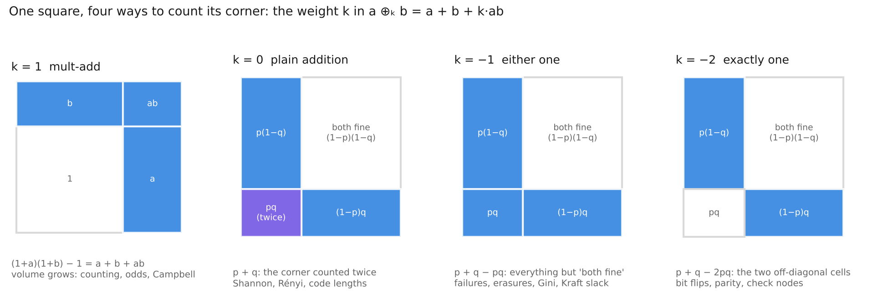
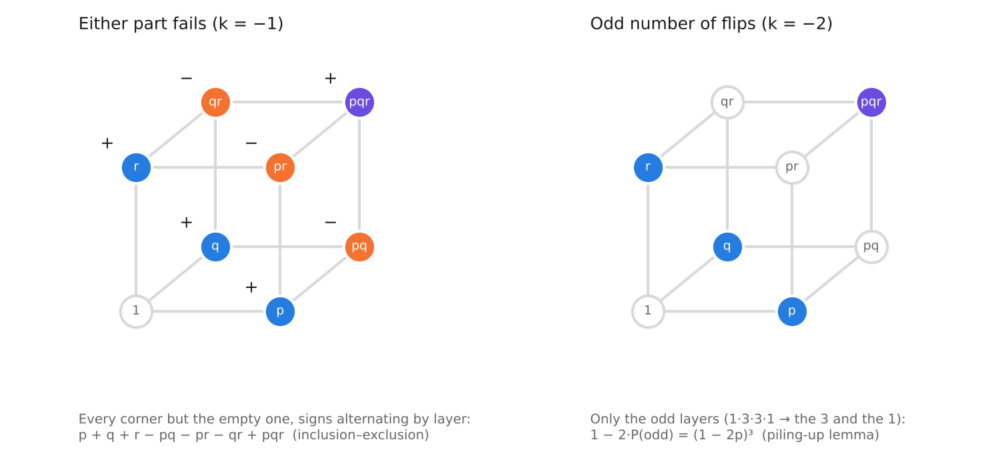
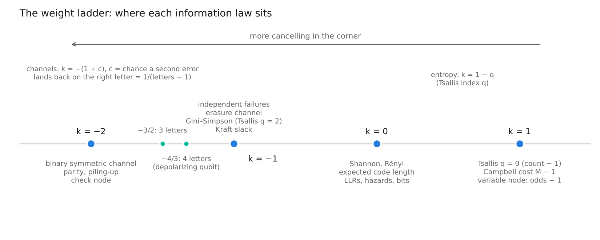
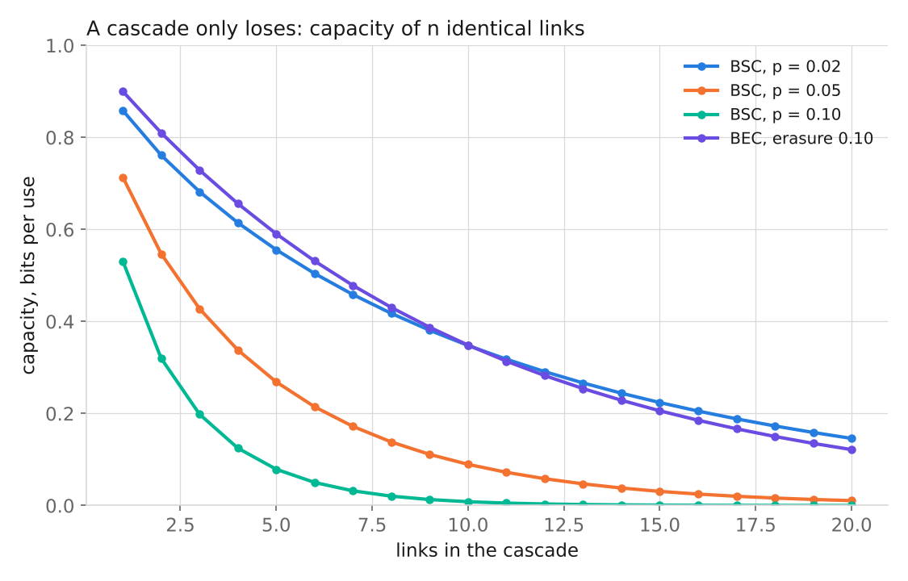
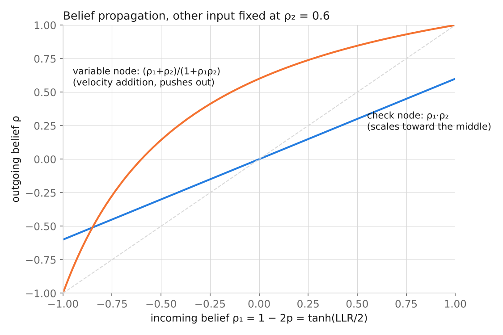

Every composition law I checked in information theory is the circle operation ∘ₖ (called mult-add before 1.0) with a weight k, a ∘ₖ b = a + b + k·ab, and the weight only says how the corner cell ab of the circle-operation square is counted. Six shared lemmas then prove 44 known laws, from the union rule for failures to Tsallis entropy, Kraft's inequality, channel cascades, Hamming codes and belief-propagation decoding.

k = 1 grows a volume, k = 0 ignores the overlap, k = −1 counts the overlap once, k = −2 throws the overlap away. That is the whole story of this page, drawn once.
Known or new. Every law here is known, most of them classical, and that was the aim: proofs of existing laws in one fused language. Tsallis' non-additivity S_A + S_B + (1−q)S_A·S_B is from 1988, and reading entropies through formal group laws is already a research line (Tempesta's "group entropies"). Two readings are tidy rather than new: the channel ladder k = −(1 + c), and belief propagation as the plain circle operation in two coordinates of the same bit.
No lead as strong as the solitons turned up. What this area adds is breadth: one kit of six lemmas carries the whole field.
Proof status. 61 theorems in lean/InfoFused.lean, core Lean only, no sorry: 17 for the kit and 44 laws. They are not compiled yet. Lean isn't installed where I worked, and installing it would have meant running a downloaded installer, which I didn't do. Every ring identity was checked symbolically with sympy, and every law numerically: 178 checks pass (checks_output.txt). The file follows the style of the project's compiled files (core Rat, grind), so it should compile with lean InfoFused.lean on Lean 4.24 or later; small tactic fixes are possible.
Each law below is a short proof that calls one or two of these. That's the "common proof language": the same six moves, read on different quantities.
| Lemma | Statement | Geometry |
|---|---|---|
| K1 lift | 1 + k·(a ∘ₖ b) = (1 + k·a)(1 + k·b) | the square's area multiplies |
| K2 climb | 1 + k·(a ∘ₖ a ∘ₖ … ∘ₖ a) = (1 + k·a)ⁿ | n copies climb the cube; this is rung 2 |
| K3 flip | (−a) ∘ₖ (−b) = −(a ∘₋ₖ b) | read the square from the other corner |
| K4 linearize | any L with L(xy) = L(x) + L(y) turns ∘ₖ into + | log flattens the square to two lengths |
| K5 outer sum | Σᵢⱼ xᵢyⱼ = (Σxᵢ)(Σyⱼ) | a grid's total is its edges multiplied |
| K6 outer log | Σᵢⱼ xᵢyⱼ·L(xᵢyⱼ) = (Σy)·Σx·L(x) + (Σx)·Σy·L(y) | log of a grid splits into its edges |
Every weight is the same algebra rescaled: k·(a ∘ₖ b) = (k·a) ∘₁ (k·b). So the laws really differ only in which coordinate they're read in.
Two independent parts failing with chances p and q: at least one fails with chance p ∘₋₁ q = p + q − pq. That's the circle operation read on negatives (K3): the "or" rule is the circle operation seen from the both-fine corner.

Left: "either part fails" counts every non-empty corner with alternating signs. Right: "an odd number of flips" keeps only the odd layers. Same cube, two weights.
For independent sources, power sums multiply (K5): Σ(pᵢrⱼ)^q = (Σpᵢ^q)(Σrⱼ^q). Tsallis entropy is that power sum minus 1, over k = 1 − q_T. So by K1 it composes as S_AB = S_A ∘ₖ S_B with k = 1 − q_T, Tsallis' pseudo-additivity. Applying log (K4) to 1 + k·S gives Rényi entropy, which adds. The family has three landmarks, each a law of its own:
| Tsallis q_T | Weight k | What it counts | How it composes |
|---|---|---|---|
| q_T = 0 | 1 | outcomes minus one, N − 1 | NM − 1 = (N − 1) ∘₁ (M − 1): the grid minus its unit cell |
| q_T = 1 | 0 | Shannon entropy H | H(X,Y) = H(X) + H(Y), proved from K6 for any log |
| q_T = 2 | −1 | Gini–Simpson 1 − Σp², the chance two draws differ | the union rule: "the pair differs" = "A differs or B differs" |
For N equally likely outcomes and k = 1 − q_T a whole number m, 1 + k·S = Nᵐ. So k·S is exactly the fused power (N − 1)^∘₁m, the climb up the circle-operation cube (K2). Composing two sources uses rung 1; turning a count into an entropy uses rung 2.
Known: Tsallis (1988); the Rényi–Tsallis link through log(1 + k·S); formal-group entropies (Tempesta, 2011 and 2016). The three-landmark reading is a presentation.

Send a symbol through two noisy hops in a row. It arrives right if both hops were clean, or if the first hop erred and the second erred back onto the right letter. If c is the chance a second error lands back on the right letter, the error composes as e₁ ∘ₖ e₂ with k = −(1 + c). For a symmetric channel c = 1/(letters − 1):
Each formula was checked against the actual transition-matrix product for 2, 3, 4, 5 and 8 letters.
For crossovers below ½, the cascade's crossover is at least each link's and stays below ½, where capacity falls as crossover rises. For erasures, C₁·C₂ ≤ C₁. The strong form: the contraction (1 − 2p)² multiplies (Ahlswede–Gács). Parallel channels go the other way: capacities add and message counts multiply.

Known: the tanh rule and φ (Gallager, 1963); piling-up (Matsui, 1993); Hamming (1950). The velocity-addition resemblance has probably been noticed; I didn't find a source, so treat it as known.

The bit's belief lives on a segment from −1 to 1. Parity scales it toward the middle; extra evidence pushes it out like adding velocities.
Core Lean has no real numbers, so anything needing log, real powers p^q or the binary entropy function h(p) is stated for any L that turns products into sums, which log does. The probability models themselves (that a channel is a transition matrix, a cascade a matrix product) are checked in Python, not in Lean, as is the fact that capacity 1 − h(p) falls on [0, ½]. And, again, the file hasn't been compiled yet.